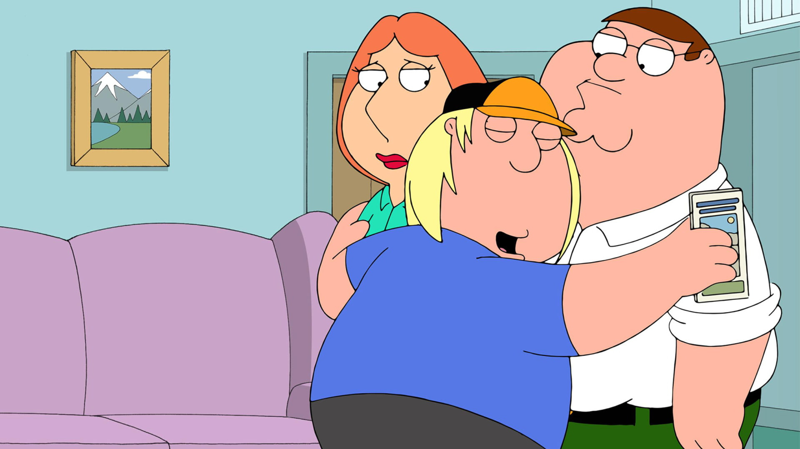

Chris Griffin
É o filho do meio de Lois e Peter Griffin. Nas primeiras temporadas ele tinha 13 anos, depois completou 14. É estudante da escola secundária Adam West (antiga escola James Woods). Tem uma inteligência abaixo do normal, ao ponto de achar que um rato é um peixe peludo por exemplo. É constantemente assediado por John Hebert, um idoso, que é seu vizinho. Já tentou se converter ao judaísmo para "ficar inteligente", porém acaba falhando. Chris não é muito fã de Brian, e em algumas temporadas trabalhou no mercadinho de Quahog. Já tentou ter alguns relacionamentos amorosos, inclusive com a cantora Taylor Swift, porém todos falharam. Nas primeiras temporadas havia um macaco que morava em seu armário, porém ele acaba se mudando para a casa de Jake Tucker, garoto com a cara invertida. É considerado por Lois um filho indesejado, apesar dela amar ele. É o único herdeiro da fortuna de Carter Pewterschmidt. Já foi vocalista de uma banda de rock, e apesar da pouca inteligência, tem um bom conhecimento em quadrinhos, séries de tv, entre outras coisas.
Curiosidade
Chris é o único loiro da família Griffin